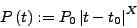
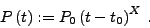

The keyword sim:poly is given with five floating-point parameters. They specify
|  | (21) |
For integer exponents, the trend is generated by the relation
|  | (22) |
If the lower and upper time limits are both set zero, the polynomial trend is generated for the entire time base.
Example. The sample project sim-poly contains the simulation and analysis of 16 individual power functions defined on different time intervals (Fig.29). The sampling of the V photometry of IC4996#89 is used, and the simulator replaces the original observable values, according to the line
sim:replace
in the file sim-poly.ini. The specifications for the power functions are contained in the lines
sim:poly 2520.215 2521.088 4.298 2520.626 0.581
sim:poly 2521.088 2521.679 2.932 2521.443 1.195
sim:poly 2521.679 2522.442 1.092 2522.067 1.063
sim:poly 2522.442 2522.595 5.372 2522.466 0.676
sim:poly 2522.595 2523.351 2.495 2522.682 2.042
sim:poly 2523.351 2523.924 2.839 2523.607 0.221
sim:poly 2523.924 2524.478 8.357 2525.412 -0.899
sim:poly 2524.478 2525.399 2.304 2524.576 1.432
sim:poly 2525.399 2526.107 2.573 2525.721 1.205
sim:poly 2526.107 2526.550 6.350 2526.493 0.031
sim:poly 2526.550 2526.847 4.192 2526.589 2.893
sim:poly 2526.847 2527.616 0.345 2527.652 -0.472
sim:poly 2527.616 2528.264 3.583 2527.783 0.725
sim:poly 2528.264 2528.777 1.246 2528.704 0.610
sim:poly 2528.777 2529.606 3.534 2529.535 1.752
sim:poly 2529.606 2530.242 9.002 2529.694 1.119
The screen output contains the lines
*** simulator: replace *************************************
polynomial trend
polynomial trend
polynomial trend
polynomial trend
polynomial trend
polynomial trend
polynomial trend
polynomial trend
polynomial trend
polynomial trend
polynomial trend
polynomial trend
polynomial trend
polynomial trend
polynomial trend
polynomial trend
to indicate that the simulator replaces the original observables by the synthetic values, and that 16 power functions are generated.
SIGSPEC detects 19 significant signal components, which are not discussed here.


Next: Exponential trend
Up: The Built-in Simulator
Previous: Sinusoidal signal
Contents
Piet Reegen
2009-09-23